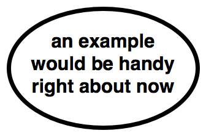

Höst 2019
Ville Svärd
Testa hur en bit logik beter sig i en situation

Skriv ett (unit) test före implementationen
Changing the structure of existing code without changing its behaviour
Alltid
Testa kontrakt vi vill skall hålla
eller
Logik, saker vi kan göra eller tänka fel
eller
Testa sånt vi vill veta när det går fel (men kanske kan fixa lätt)
eller
Testa antaganden vi vill veta när de inte längre stämmer